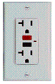
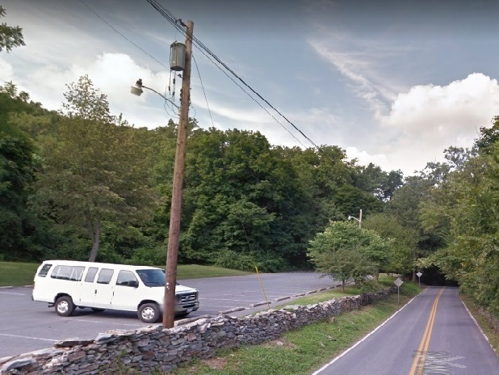
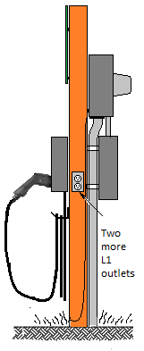
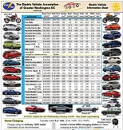
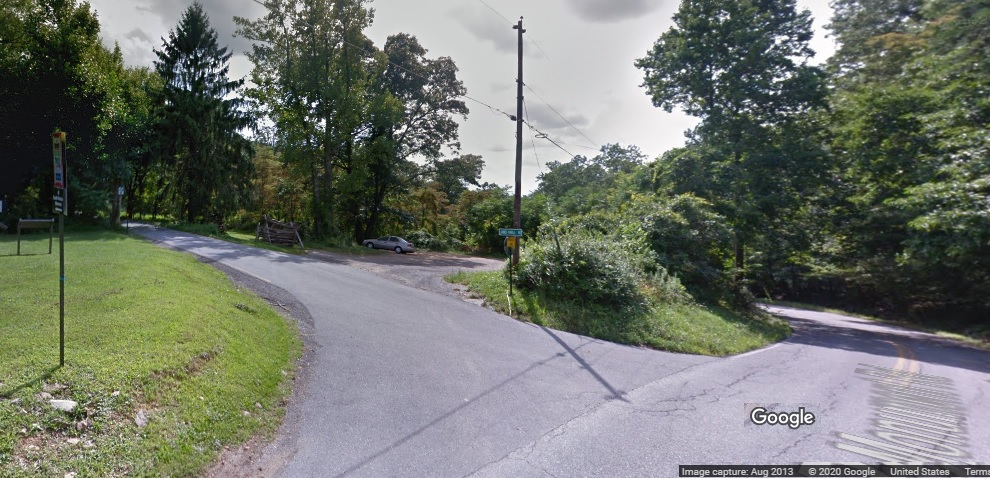
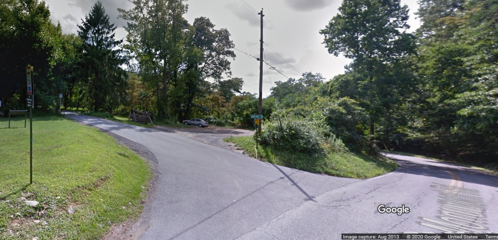
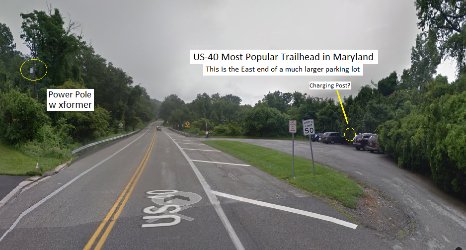
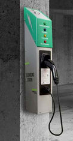

Bob Bruninga, PE
lastname at usna dot edu
Author: Energy Choices
Hiking is the healthiest and cleanest carbon free form of transportation, burning nothing but a bit of trail mix. On the
other hand, it is a travesty when hikers use a gasoline powered SUV to drive up a mountain to and from the trail head that takes
5 gallons of gas just to get there! The Appalachian Trail spans 40 miles across Maryland and is one of the most popular
outdoors and hiking destinations. This proposal suggests a partnership between stakeholders to install simple standard 120v outlets
at the several trail heads in Maryland to encourage a slow top-off L1 charge from 100% clean electricity for EV hikers to compensate
for the energy used to get to the trail.
See AT Map of Trailheads with power lines
All EV’s come with a convenient 120v standard charge cord that can plug into any convenient standard 120v outlet.
Thus, any EV when plugged in for say a 10 hour day hike can gain about 40 miles of EV range for the trip home. Not to
mention the 7 miles per 1000’ feet recovered from the potential energy and regeneration on the way back down the hill.
A good example trail head in Maryland is at Gathland State park. There is already transformer power in the parking lot
as shown below left. We can add a Charging post with an L1 cord and two additional 120v outlets as shown below right.
See Detail Drawing and proposed location for access to 3 parking spots, or best location at 2nd light pole.
 . . . 
Plugin-Hybrids: While a 40 mile charge might not be considered much compared to the typical 250 mile Battery
Electric Vehicle (BEV), more than half (32 of 61, see list) of all EV's on the market are plugin-hybrids that
have ranges of 40 miles or less. Thus, a 10 hour day hike plugged into 120v constitutes a full charge, and
allows maximum emissions-free return range without having to use the PHEV backup-gas engine.
 The cost to charge is about 20 cents an hour or about $1.60 worst case per day for a car left there for
8 hours. And there is zero incentive for non hiking EV's to plugin, since the slow charge rate
(4 miles/hour) is not worth it to travelers. Considering about 30% usage then the electric cost should
be under $20 per month. The cost to install should be under $2k. Since the hardware is nothing but
maybe three standard 120v outlets, this project does not involve any Charging Station hardware, nor
contractors, nor expensive credit card devices nor networks nor special charging accounts nor cumbersome
contract billing schemes (nor sharing). It is simply a one-time addition of two standard outlets and a
single charge cord adjacent to the parking lot and placement of EV Charging signs. We are suggesting
one charge cord to help make it visually identifiable and to reduce risk in case of cord theft.
Another example trail head is at Fox pass(below). It has a power pole in the parking area with a high voltage line and should be easy to
add a small 60 amp transformer, a circuit breaker box and the three 120v outlets.

Paying for the Electricity:
The cost to charge is about 20 cents an hour or about $1.60 worst case per day for a car left there for
8 hours. And there is zero incentive for non hiking EV's to plugin, since the slow charge rate
(4 miles/hour) is not worth it to travelers. Considering about 30% usage then the electric cost should
be under $20 per month. The cost to install should be under $2k. Since the hardware is nothing but
maybe three standard 120v outlets, this project does not involve any Charging Station hardware, nor
contractors, nor expensive credit card devices nor networks nor special charging accounts nor cumbersome
contract billing schemes (nor sharing). It is simply a one-time addition of two standard outlets and a
single charge cord adjacent to the parking lot and placement of EV Charging signs. We are suggesting
one charge cord to help make it visually identifiable and to reduce risk in case of cord theft.
Another example trail head is at Fox pass(below). It has a power pole in the parking area with a high voltage line and should be easy to
add a small 60 amp transformer, a circuit breaker box and the three 120v outlets.

Paying for the Electricity:
A donation campaign; Or sponsorships.
An ongoing contribution to clean air from the park system or local Electric Utility or state grants;
An iron ranger shown here (steel box with a fee slot) like are used at several parks for after hours fee collection.
Possible Stake Holders:
- MD EV Infrastructure Council for support and endorsement
- Potomac Edison as the local electricity provider
- Appalachian Trail Conservancy for identification of sites and promotion
- Maryland Department of Natural Resources – State parks
- EV Association of DC and Metropolitan areas.
- Maryland Sierra Club?
Trail Heads in Maryland (roughly South to North):
- Harpers Ferry (power and meter exist) - Wolfsville Rd Parking Lot (no power)
- Weaverton Parking Lot (power) - Warner Hollow Rd (no power)
- Gathland State park (power transformer) - Raven Rock Trail Head (no power)
- US40 Nat Pike (at I-70) (power transformer) - Foxville Road (no parking)
- Fox gap (power poles) - High Rock (no power)
- Old South Mountain Inn (alt US40, power)
- Washington Monument State Park (power) and Close-up View An excellent site for parking next to underground power feed
- Pen Mar Park (power)
Washington Monument State Park has an ideal location for a few EV charging spots in the grassy area below the Host RV parking spot.
In that area just off the gravel road is an underground power feed where it would be trivial to add a few charging outlets. In addition
it is down near the official AT hiking parking lot and far from the Mopnument parking so that there is unlikely to be gas car competition.
See links above.
Harpers Ferry has an ideal Parking Area for EV charging right at the start of the AT trail crossing the railroad bridge.
The lot used to be available for cars but has been blocked from parking for years. But it has not only power, but a meter
and power pole making it easy to provide exclusive EV parking. By limiting the access to the lot to EV Charging for AT Day
Hikers Only the lot would not be abused nor overloaded and would provide a highly visible support for Clean Energy vehicles.
US-40 National Pike Trailhead: The most popular trailhead in Maryland is where US-40 crosses I-70 with plenty of parking and
power on the other side of the road as shown below. There is already a secondary power transformer but there is added cost since
the power line drop will have to cross the road and require another utility pole to be added to support the line and the charging
outlets. A special bonus is that the location of the power is at the far end of the parking lot which will make the EV spaces less
desirable to non EV vehicles assuring that the spaces will be the last to fill and more likely available to EV hikers.

See West end of parking lot
Retractable L1 Charge Cord: If suitable funding is available to be able to afford an additional $1000 initial
outlay at each trailhead,Then it would be possible to add a commercial L1 Charging station with retractable cord.
There would still be an additional pair of 120v L1 outlets for additional users to use their own charge cords.
But the first user to arrive could use the convenient L1 cord. We would not install three cords initially because
there is a small risk of cord theft and only having one reduces replacement costs.
Potomac Edison Has an EV incentive program: but it does not apply. Their contract to cover half the cost
of installation only applies to expensive L2 and DC fast chargers on public land that have expensive intrnet linked
metering and EV user charging payment programs. See their plan. They do not offer L1 chargers in this program.
This is not an option for this application because the last thing you want at an L2 charging station is one car
plugged in for 8-10 hours so that no one else can use the charger. Exactly what happens at a trailhead.
I personally will help any way I can if there is any way to get this project started. The first step is having
Potomac Edison estimate the cost to install service at the above two examples and the estimated fixed monthly
billing fees to help scope the overall cost. Stake holders should encourage the use of EV’s for this healthy
outdoors activity. An EV uses a lot of range mileage climbing to the top of a pass. But if they can top off for
a few hours while hiking, then they can pickup plenty of miles for the trip home.
See examples of simple 120v EV charging in Maryland
Download two-page paper summary of this project.
.
See Sitemap to over 450 of Bob's othe web pages.
.
{kind=link}
{kind=link}
{kind=link}
{kind=link}
{kind=link}
{kind=link}
{kind=link}
{kind=link}
{kind=link}
{kind=link}
{kind=link}